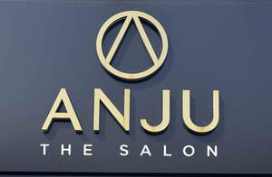

Trade Mark Journal No.2025/038 19 September 2025
UK00004228253 2 July 2025 (3,35,44)

- Class 3
- Hair styling lotions; Hair care lotions [for cosmetic use]; Cosmetic products in the form of aerosols for skincare; Cosmetic products in the form of aerosols for skin care; Styling lotions; Non-medicated hair treatment preparations for cosmetic purposes; Hair care creams [for cosmetic use]; Hair decolorant preparations; Non-medicated hair lotions; Cosmetic hair lotions; Products for protecting coloured hair; Skin care oils [non-medicated]; Non-medicated hair shampoos; Hair moisturizers; Hair decolorants; Hair care lotions; Skin care oils [cosmetic]; Mousses being hair styling aids; Non-medicated balm for hair; Hair rinses [shampoo-conditioners]; Pre-shaving lotions; Cosmetic products for the shower; Hair cosmetics; After-sun oils [cosmetics]; Hair care serums; Skin moisturizers used as cosmetics; Anti-aging moisturizers used as cosmetics; Hair strengthening treatment lotions; Cosmetic hair care preparations; Hair protection lotions; Hair preservation treatments for cosmetic use; Hair desiccating treatments for cosmetic use; Skin hydrators for cosmetic purposes; Hair care creams; Hair moisturisers; Skin care lotions [cosmetic]; Hair balms; Mousses [toiletries] for use in styling the hair; Gel sprays being styling aids; Hair styling gel; Non-medicated skin clarifying lotions; Moisturising skin lotions [cosmetic]; Colouring lotions for the hair; Hair lotions; Eye care products, non-medicated; Sets of cosmetic oral care products; Skincare cosmetics; Wrinkle-minimizing cosmetic preparations for topical facial use; Hair styling preparations; Styling sprays for the hair; Skin conditioning creams for cosmetic purposes; Non-medicated skin serums; Non-medicated skincare preparations; Hair styling waxes; Non-medicated cosmetics; Natural oils for cosmetic purposes; Hair oils; Skin balms [cosmetic]; Body and facial creams [cosmetics]; Suncare lotions [for cosmetic use]; Cosmetic preparations for the hair and scalp; Cosmetics in the form of oils; Moisturisers [cosmetics]; Hair protection creams; Skin care creams [cosmetic]; Cosmetic creams for skin care; Cosmetic nourishing creams; Non-medicated skin lotions; Hair styling gels; Styling gels for the hair; Anti-aging serum for cosmetic use; Topical skin sprays for cosmetic purposes; Skin care cosmetics; Preparations and products for fur care; Facial moisturisers [cosmetic]; Tanning oils [cosmetics]; Hair serums; Non-medicated skin balms; Hair moisturising conditioners; Hair tonics [for cosmetic use]; Moisturising skin creams [cosmetic]; Anti-ageing serums for cosmetic purposes; Cosmetic oils for the epidermis; Shampoos for human hair; Beauty preparations for the hair; Tissues impregnated with essential oils, for cosmetic use; Cosmetic hair dressing preparations; Oils for hair conditioning; Hair styling spray; Cosmetics in the form of lotions; Anti-aging skincare preparations; Hair emollients; Skin cleansers [cosmetic]; Hair care serum; Non-medicated stimulating lotions for the skin.
- Class 35
- Retail services in relation to hair products; Sales promotions at point of purchase or sale, for others.
- Class 44
- Hair dressing; hair styling; beauty treatments; nail dressing; NVQ beauty courses; hair dressing courses; Hair styling services; Cosmetic treatment services for the body, face and hair; Cosmetic treatment for the hair; Application of cosmetic products to the body; Services of a hair and beauty salon; Cosmetic make-up services; Cosmetic facial and body treatment services; Hair colouring services; Hair dressing salon services; Haircare services; Hair styling; Skin tanning service for humans for cosmetic purposes; Hair treatment services; Cosmetic skin tanning services for human beings; Hair salon services for men; Hair salon services for women.
Monsieur Ltd